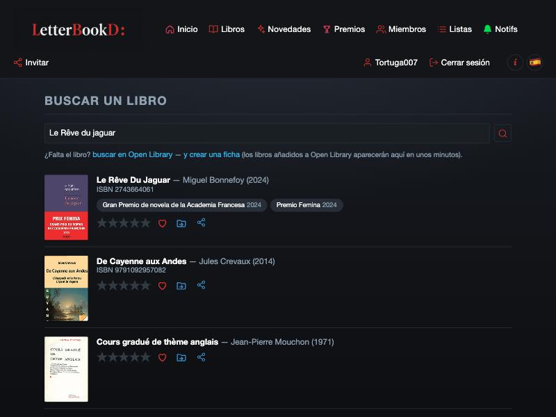
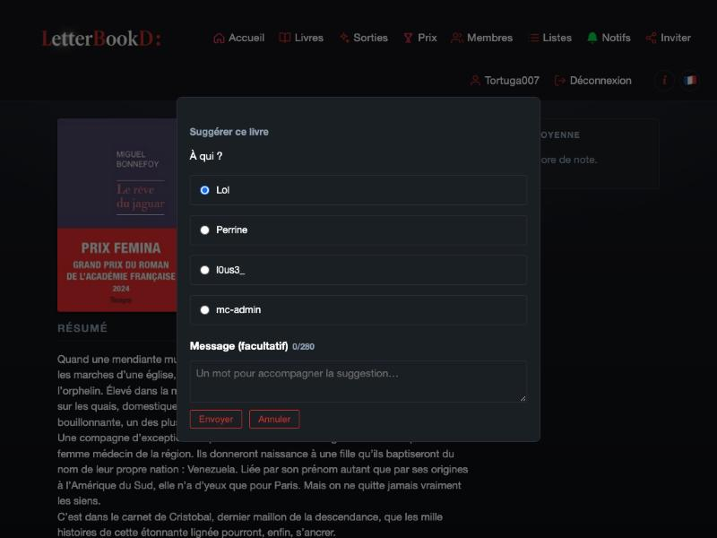

Libros — Buscar
Para qué sirve: Encontrar un libro en el catálogo compartido del club. Si el libro no está, puedes proponerlo a través de Open Library: aparecerá en el catálogo unos minutos después.

Recorrido
Escribe el inicio de un título, un nombre de autor o un ISBN en la barra de búsqueda y pulsa Intro (o haz clic en la lupa). Si el libro no aparece, sigue el enlace «buscar en Open Library» y luego «crear una ficha allí»: Open Library envía la ficha a letterbookd en unos minutos.
Cadenas de acción
Cada fila describe un disparador en la interfaz, el modal o formulario que abre, y el efecto producido.
| Disparador | Modal / Campos | Efecto |
|---|---|---|
| Barra de búsqueda | Un campo de texto (título, autor o ISBN). Envío: Intro o clic en la lupa. | Recarga la página con los resultados correspondientes. La URL lleva el parámetro «?q=…» para compartir la búsqueda. |
| Enlace «buscar en Open Library» / «crear una ficha allí» | Formulario de Open Library (fuera de letterbookd). | Crea una ficha en Open Library; letterbookd la recupera en los minutos siguientes. Repetir la búsqueda hará aparecer el libro nuevo. |
| Icono de corazón (fila de resultado) | — | Añade o quita el libro de tu lista del sistema «Favoritos». |
| Icono de carpeta (fila de resultado) | Abre la ventana «Añadir a una lista» (ver más abajo). | Añade el libro a la lista elegida o a una nueva lista creada en el momento. |
| Icono de compartir / triángulo (fila de resultado) | Abre la ventana «Sugerir este libro». | Envía una sugerencia privada a un miembro de tu club, con un mensaje opcional (280 caracteres como máximo). |
| Estrellas grises (fila de resultado) | Al hacer clic en las estrellas se abre el formulario completo de puntuación en la ficha del libro. | Redirige a la ficha del libro y espera tu nota. |
Ventanas
